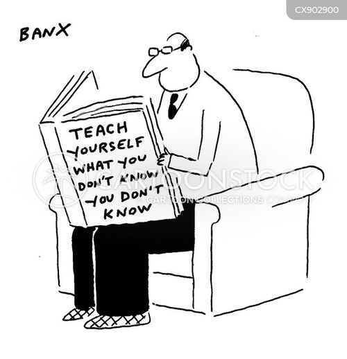

In my leisure time, I immerse myself in the vibrant virtual world of VRChat, where I enjoy socializing and exploring diverse digital environments.
I also have a passion for aviation, which I indulge through Microsoft Flight Simulator, allowing me to experience the thrill of flying and perfecting my piloting skills.
Dedicated to achieving N1 proficiency, I actively participate in Nihongo classes, constantly improving my Japanese language abilities.

Additionally, I am a strong advocate of continuous learning, always seeking new knowledge and skills to stay ahead in both my personal and professional life.